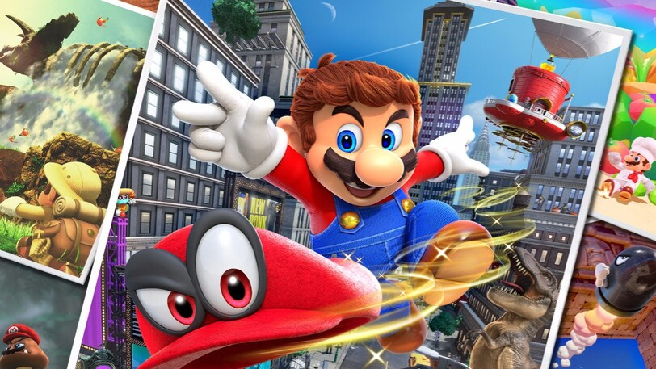
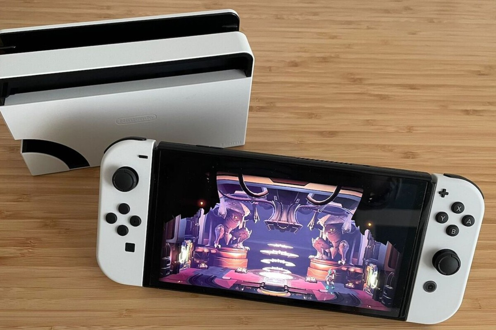

Nintendo
Explora el mágico mundo de Nintendo, donde la diversión y la creatividad se unen en experiencias de juego únicas. Descubre los últimos títulos, consolas innovadoras y más.
Juegos Destacados
-
The Legend of Zelda: Breath of the Wild

Embárcate en una aventura épica en el vasto mundo de Hyrule con Link. The Legend of Zelda: Breath of the Wild redefine los estándares de los juegos de aventuras con su libertad de exploración y su narrativa cautivadora.
-
Super Mario Odyssey
Acompaña a Mario en una emocionante odisea alrededor del mundo para rescatar a la princesa Peach. Super Mario Odyssey ofrece mundos coloridos, mecánicas de juego innovadoras y diversión sin límites.
Noticias y Novedades
Nintendo Switch Pro, la próxima generación de diversión portátil
Descubre la nueva Nintendo Switch Pro, con mejoras en rendimiento y una experiencia de juego más inmersiva. Lleva tus juegos favoritos a donde quieras.
La familia Nintendo Switch se expande con la llegada de la Nintendo Switch Pro, diseñada para ofrecer un rendimiento mejorado y gráficos más nítidos. Disfruta de tus juegos favoritos con una calidad excepcional, ya sea en modo portátil o en tu televisor.
Fuente: Nintendo
Accesorios y Características
Personaliza tu experiencia de juego con los accesorios exclusivos de Nintendo. Desde controles Joy-Con hasta el Ring Fit Adventure, descubre cómo Nintendo hace que jugar sea aún más divertido.
Multimedia
Sumérgete en el universo Nintendo con tráilers, videos promocionales y contenido multimedia emocionante. Descubre las próximas aventuras que te esperan.
Comunidad Nintendo
Conéctate con otros jugadores y forma parte de la comunidad Nintendo. Descubre eventos, comparte experiencias y participa en conversaciones apasionantes sobre tus juegos favoritos. En Nintendo, celebramos la creatividad y la diversión. Únete a nuestra comunidad y comparte la alegría de jugar.